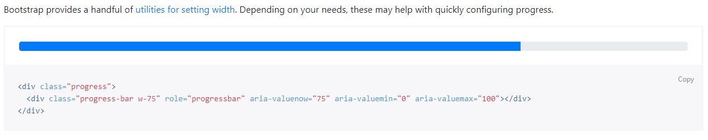
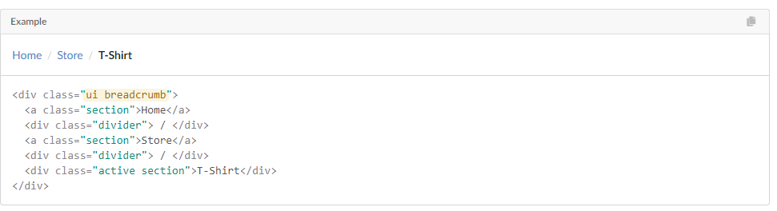
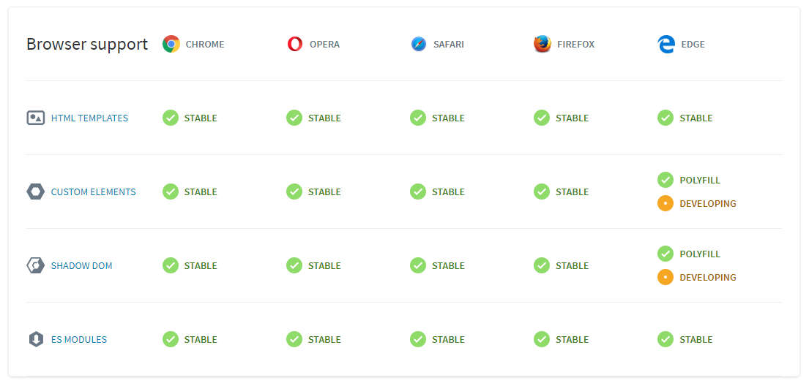
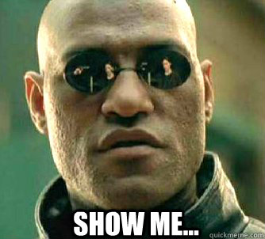
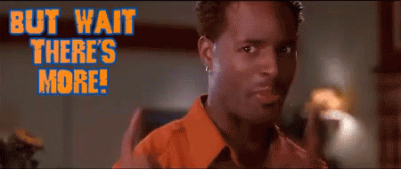

class: center, middle # <img src="assets/img/html5.png" alt="HTML 5 logo"> <br>`<web-components>` --- # Not a new idea! - The practice of using fron-end code as separate UI components is not new. - [Bootstrap](https://getbootstrap.com/), [Foundation](https://foundation.zurb.com/), [Semantic UI](https://semantic-ui.com/), [Infragistics](https://www.infragistics.com/), [AngularJS](https://angularjs.org/), etc - A progress bar "component" in Bootstrap 4  - A breadcrumb component in Semantic UI  --- # What are the benefits? - Reusable UI functionality in a single application or across multiple applications. - We can focus on solving business problems. - Great developer experience. - More productivity...more partying! --- # Can we do better? - Bootstrap and friends' way of spliting front-end code into components is great. - But...do we not have a more sementic way of expressing our markup code? - What if we can go from this: ```html5 <div class="progress"> <div class="progress-bar w-75" role="progressbar" aria-valuenow="75" aria-valuemin="0" aria-valuemax="100"></div> </div> ``` - To this: ```html5 <progress-bar progress="75"></progress-bar> ``` ...and maintain the same behaviour across different browsers and devices. --- # Enter `<web-components>` <img style="position: absolute; left: 35%; top: 40%" src="assets/img/web-components-logo.png" alt="Web Components Logo"> --- # What are web components? - This is a meta-specification made possible by four other independent specifications: - [Custom Elements](https://html.spec.whatwg.org/multipage/custom-elements.html) - [Shadow DOM](https://dom.spec.whatwg.org/#shadow-trees) - [HTML Template](https://html.spec.whatwg.org/multipage/scripting.html#the-template-element) - [ES/JS Module](https://html.spec.whatwg.org/multipage/webappapis.html#integration-with-the-javascript-module-system)  --- # Custom Elements - A set of JavaScript APIs that allow you to define custom elements and their behaviour. - There are 2 Types of custom elements: - Autonomous custom elements: - Standalone, they don't inherit from standard HTML elements. - Customized built-in elements: - Inherit from basic HTML elements. - Component behaviour can be managed throught lifecycle callbacks. <div style="text-align: center; margin-top: 1em;">  </div> --- # Custom Elements :: Autonomous - Defining the component in JS ```JavaScript // Define the element customElements.define('awesome-progress-bar', AwesomeProgressBar); // Put some behaviour up in this class AwesomeProgressBar extends HTMLElement { /** * An instance of the element is created or upgraded. * Useful for initializing state, settings up event listeners, or creating shadow dom. * See the spec for restrictions on what you can do in the constructor. */ constructor() { super(); // Functionality code goes over here } } ``` - Using the component in HTML ```html5 <awesome-progress-bar progress="75"></awesome-progress-bar> ``` --- # Custom Elements :: Customized built-in - Defining the component in JS ```JavaScript // Define the element customElements.define('word-count-paragraph', WordCountParagraph, { extends: 'p' }); // Now...the behaviour class WordCountParagraph extends HTMLParagraphElement { constructor() { super(); // Some functionality code over here } } ``` - Using the component in HTML ```html5 <word-count-paragraph>Some awesome text</word-count-paragraph> ``` --- # Custom Elements :: Lifecycle Callbacks - Special callback functions defined inside the custom element's class definition, which affect its behavior: - `connectedCallback()` - Called every time the element is inserted into the DOM. - Useful for running setup code, such as fetching resources or rendering. - Generally, you should try to delay work until this time. - `disconnectedCallback()` - Called every time the element is removed from the DOM. - Useful for running clean up code. - `adoptedCallback()` - Invoked each time the custom element is moved to a new document. - e.g. someone called `document.adoptNode(el)` - `attributeChangedCallback(attrName, oldVal, newVal)` - Invoked each time one of the custom element's attributes is added, removed, or changed. - Also called for initial values when an element is created by the parser, or upgraded. - Which attributes to notice change for is specified in a static get observedAttributes method. --- # Shadow DOM - The shadow DOM API allows you attach DOM subtrees to elements in a web document. - These subtrees are encapsulated; style information inside them cannot apply to outside elements, and vice versa. - The DOM (Document Object Model) is a representation of the structure of an html document. - The DOM models a document as a tree, with elements in parent-child relationships. - On its own, the DOM API contains no support for encapsulation. - This makes it hard to develop custom elements as style information may “leak” into or out of other elements in the tree; - or IDs may overlap between custom elements and other elements in the document. --- # Shadow DOM :: Benefits? - Isolated DOM: - A component's DOM is self-contained. - e.g. `document.querySelector()` won't return nodes in the component's shadow DOM. - Scoped CSS: - CSS defined inside shadow DOM is scoped to it. - Style rules don't leak out and page styles don't bleed in. - Composition: - Design a declarative, markup-based API for your component. - Simplifies CSS: - Scoped DOM means you can use simple CSS selectors, more generic id/class names, and not worry about naming conflicts. - Productivity: - Think of apps in chunks of DOM rather than one large (global) page. --- # Shadow DOM :: Creating a Shadow DOM - In Shadow DOM, use the attachShadow() method to create shadow DOM: ```JavaScript const header = document.createElement('header'); const shadowRoot = header.attachShadow({ mode: 'open' }); shadowRoot.appendChild = '<h1>Hello Shadow DOM</h1>'; ``` <div style="text-align: center; margin-top: 2em;">  </div> --- # Shadow DOM :: Composition and slots - If an element has shadow DOM, the shadow tree is rendered instead of the element's children. - For children to render, [slots](https://developers.google.com/web/fundamentals/web-components/shadowdom#slots) can be added to the shadow tree. - How? ```html5 <header> <h1><slot name="header-text"></slot></h1> <button>Menu</button> </header> ``` - Add some children by using the component in our HTML: ```html5 <my-header>A really awesome heading!!!</my-header> ``` - The result if we `[View Page Source]`? ```html5 <my-header> <header> <h1 slot="header-text">Shadow DOM</h1> <button>Menu</button> </header> </my-header> ``` --- # Shadow DOM :: Styling - Styles inside a shadow tree are scoped to the shadow tree, and don't affect elements outside the shadow tree. - Styles outside the shadow tree also don't match selectors inside the shadow tree. - However, inheritable style properties like [`color`](https://developer.mozilla.org/en-US/docs/Web/CSS/color) still inherit down from <a href="https://developer.mozilla.org/en-US/docs/Web/CSS/:host()">:host()</a> to shadow tree. <div style="text-align: center; margin-top: 1em;"> </div> --- # Shadow DOM :: Styling... - Component-defined styles - This is the `scoped CSS` feature: - CSS selectors from the outer document don't apply inside your component. - Styles defined inside don't bleed out. They're scoped to the host element. - CSS selectors used inside shadow DOM apply locally to your component. ---